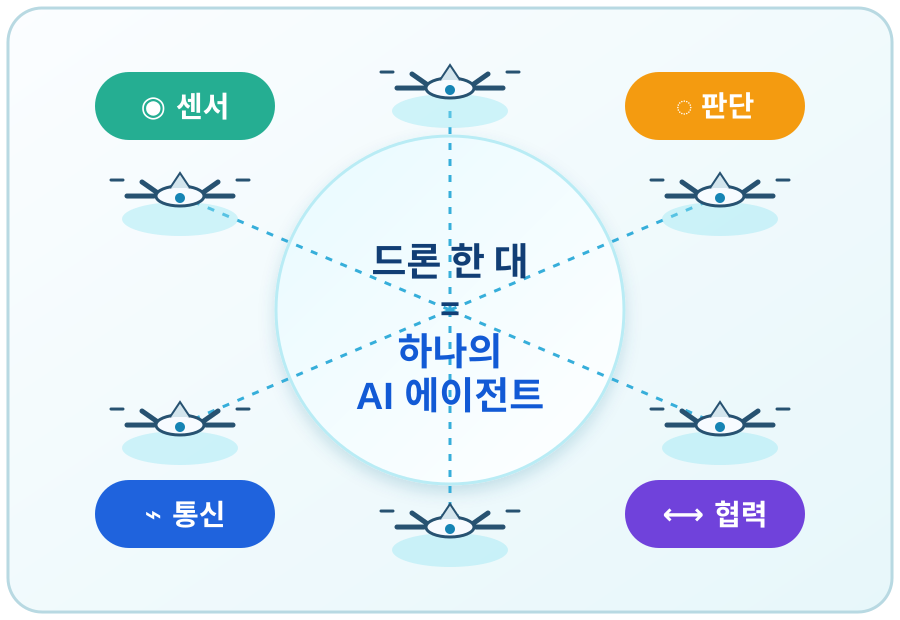

CONTROL / 01
중앙 집중식 · 계층식
상위 제어기 또는 리더가 임무를 배분하고 군집의 상태를 관리한다.
다수의 드론이 통신 네트워크로 연결되어 서로의 상태와 주변 정보를 공유하고, 하나의 유기체처럼 임무를 수행하는 협업 비행 기술이다.
드론은 감시·물류·재난 대응 등 활용 영역이 넓어졌지만, 개별 기체만으로는 짧은 비행시간과 제한된 탑재 능력 때문에 복합 임무 수행에 한계가 있다.
센서·통신·소형 컴퓨터 기술의 발전은 각 드론이 미리 정해진 알고리즘에 따라 자율적으로 판단하면서도, 전체 군집의 목표를 함께 달성할 수 있는 기반을 만들었다.
상위 제어기 또는 리더가 임무를 배분하고 군집의 상태를 관리한다.
개별 기체의 상호작용과 정보 공유로 전체의 행동을 스스로 정렬한다.
선도 기체를 따라가거나, 가상의 기하 구조를 유지하며 비행한다.
이웃 기체와의 상태 일치 또는 규칙 기반 행동으로 대형을 조정한다.

여러 기체가 넓은 지역을 분담 탐색하고 영상을 공유
기체 간 네트워크로 지상 부대의 통신 연결성을 보완
개별 기체의 자율 행동으로 상대의 판단을 분산시키는 운용
군집 드론은 '많은 드론'이 아니라, 분산된 판단을 하나의 임무 성과로 연결하는 시스템 기술이다.